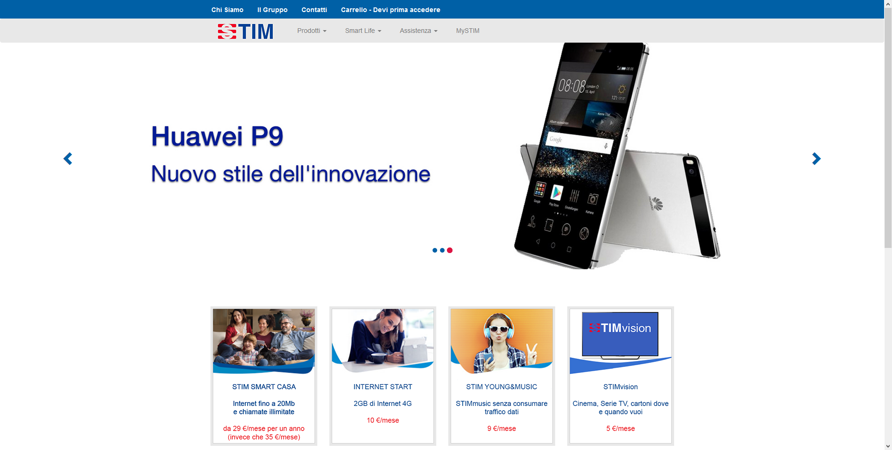

×

Per il corso di Hypermedia Applications presso il Politecnico di Milano ci è stato assegnato il compito di ricreare il sito di Telecom Italia, ottimizzandone la struttura. Il sito è realizzato con HTML, CSS, Javascript, PHP e MySQL. Il sito è ancora accessibile presso questo link.
Progetto in collaborazione con Marco Tardini e Angelo Zizzari.